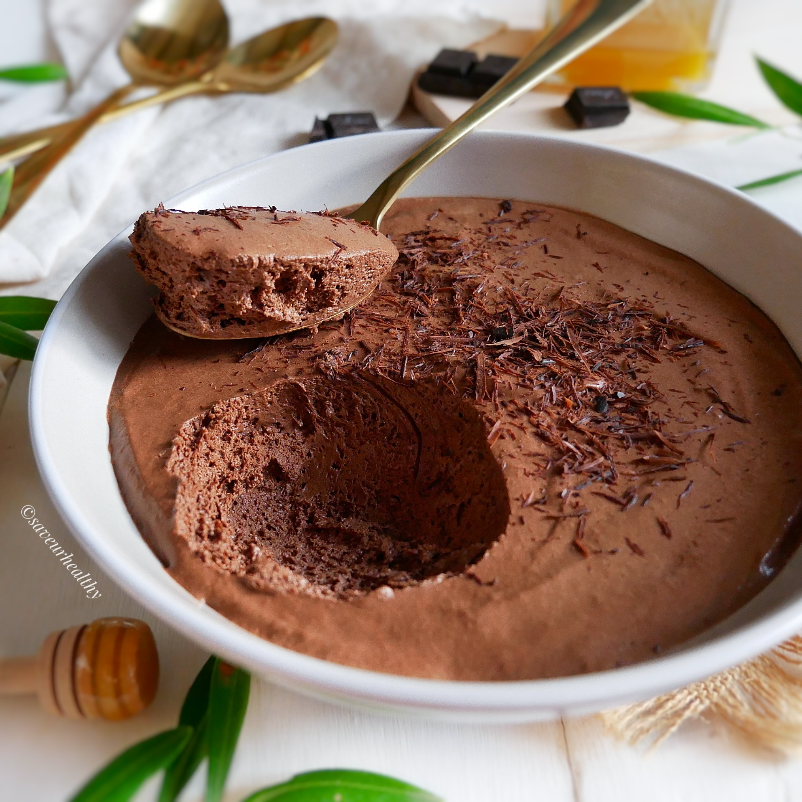

Mousse au Chocolat
Un grand classique, simple et ultra gourmand pour les amateurs de chocolat !
Ingrédients :
- 200g de chocolat noir
- 6 œufs
- 1 pincée de sel
Préparation :
- Fais fondre le chocolat au bain-marie.
- Sépare les blancs des jaunes d'œufs.
- Ajoute les jaunes au chocolat fondu.
- Monte les blancs en neige avec la pincée de sel.
- Incorpore délicatement les blancs au chocolat.
- Verse dans des ramequins et laisse au frais 3h minimum.
← Retour à l'accueil